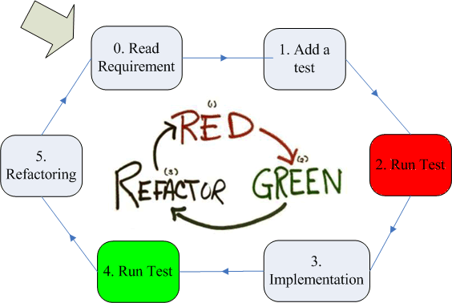
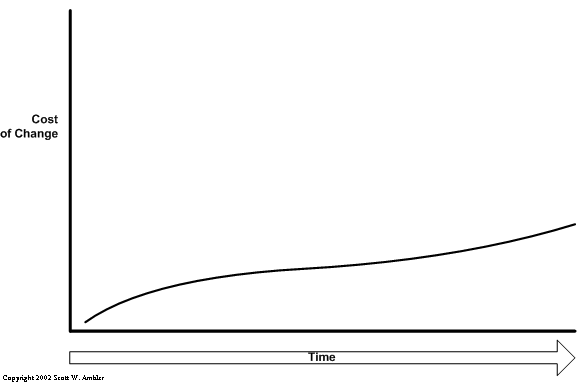
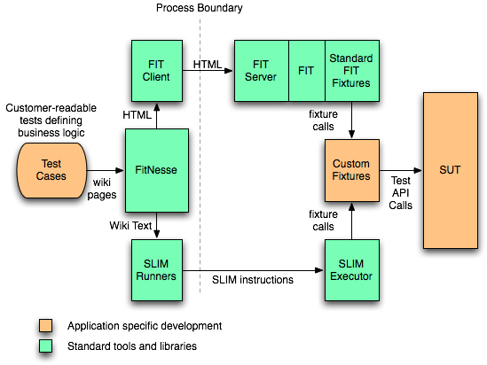
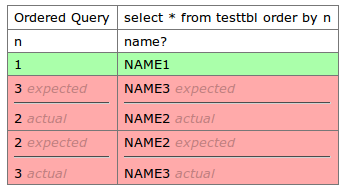

- Concepts (Testing, Test-Driven Development)
- DbFit
- Demo
Agenda
What is a legacy system?
- You spot an obvious design problem
- know how to improve that,
- but the thought about consequences gives you a stomach ache.

Why (automated) testing?
- Makes application change easier
- Safety net - provides confidence/removes fear
- Documentation
- Help to localize where exactly a defect is located
- Reduce the chance of new bugs
- Automation enables earlier feedback, saves time, helps focusing on solving the main problem. (Not everything is feasible to automate)
Test Fixture
- All the things we need to have in place in order to run a test and expect a particular outcome
- The test context
System Under Test (SUT)
The system that is being tested
Test execution cycle
- Arrange (set up the Fixture)
- Act (exercise the System Under Test)
- Assert (verify results are as expected)
- Tear Down the fixture (to isolate other tests from this one)
Unit test
- Tests small individual unit (module, procedure/function)
- In isolation (no interaction with other units)
- Should run quickly (otherwise people won't run them)
Integration test
- Tests several modules as a group
- Slower than unit tests (usually)
Acceptance test
- Conducted to determine whether or not a system satisfies its acceptance criteria
- and to enable the customer to determine whether or not to accept the system.
- At least modeled and possibly even written by the customer
- End-to-end (slower than Integration & Unit tests)
Regression tests
(Regress vs progress)
Performed to make sure that previously working functionality still works after changes elsewhere in the system
Refactor
Is the the process of changing a system in such a way that
- doesn't alter external behaviour
- and improves it's internal structure (design)
- through small steps
Doing refactoring without tests is unsafe
TDD Cycle

Tests are not the main product in TDD
- TDD is a design technique
- The design emerges in small steps
Why test first?
- Start with end in mind (think from point of view of caller)
- This perspective helps for better design
- Test coverage is useful byproduct
- Greatly reduces the need of debugging
Cost of change (traditional)

Cost of change (test early)

Why testing the Database?
- For lot of businesses, data held in DB are the most vital commercial asset they have
- Business critical functions rely on this data
- So it makes sense to validate that data is stored and processed correctly
Challenges of Database testing...
- Bad tools
- Too much boilerplate code
- OO tools not directly applicable for RDBMS
- Inherently hard to test. Isolation is difficult
- Changes are persistent
- Shared environment
- Triggers, Constraints
- Attitude ("it's not my job")
How to isolate db tests?
Run tests in one transaction
- Makes them repeatable and independent
- When one transaction is not an option - clean up after tests
How to isolate db tests (2)?
Dedicated database
- One db per contributor
- Separate schemas
- Shared Dev db may work too
- As a rule - avoid running tests on top of production
Other Tips
- Make tests self-sufficient
- Don't count on the order of tests
- Prepare everything you need for the test in its set-up
DbFit
What is DbFit?
- Initially created by Gojko Adzic:
- to enable efficient database testing
- motivate database developers to use an automated testing framework
- Enables manipulating database objects and defining tests in tabular form
- Open source https://github.com/benilovj/dbfit
DbFit, FIT and FitNesse
- DbFit is based on FIT+FitNesse+DB Fixtures which enable FIT/Fitnesse tests to execute directly against a database.
- FIT is Acceptance testing framework
- customer oriented
- tests are described as tables
- FitNesse is Wiki-web based front-end for FIT
FitNesse architecture

What is DbFit Fixture?
- A fixture is interface between:
- the test instrumentation (Fit framework),
- test cases (Fit tables),
- and the system under test (e.g. a database stored procedure)
- In general there is 1:1 mapping between Fit table and fixture
Why DbFit?
- Easy to use (even for non-technical people)
- Tests expressed and managed as tables
- Web-Wiki front-end
- Provides all the plumbing:
- Transaction management
- Features based on meta-data
- Parameter mapping
- Runs inside FitNesse - already integrated with lots of other tools/libraries
What is Wiki?
- The simplest online database that could possibly work. - Ward Cunningham
- Allows users to freely create and edit Web page content using any Web browser
- A group communication mechanisms
- Encourages democratic use of the Web and promotes content composition by nontechnical users
Fitnesse Wiki
- Hierarchies - SubWiki, Test Suites
- Page types - Suite, Test, Static
- Some special pages:
- PageHeader, PageFooter
- SetUp, TearDown, SuiteSetUp, SuiteTearDown
- Inherited recurively by default; can be overriden
- http://fitnesse.org/FitNesse.UserGuide
A Unit test with DbFit
- Set up the input data (arrange).
- Execute a function or procedure (act).
- Run a query and compare actual vs expected data (assert).
Basic commands of DbFit
- Query
- Insert
- Update
- Execute Procedure
- Execute
Advanced features
- Inspect queries, tables, procedures to auto-generate test tables and regression tests
- Store and compare queries
- Standalone mode for full control
Getting started
- Needs Java to run
- Download: http://benilovj.github.io/dbfit
- Unzip
- Copy Oracle JDBC driver (ojdbc6.jar) to lib subfolder
- Run the startup script (startFitnesse.sh or startFitnesse.bat)
- Access via web browser - http://localhost:8085
Connecting to the database
Inline configuration:
!|Connect|localhost:1521|username|password|dbname|
Using properties file:
!|ConnectUsingFile|DBConnection.properties|
service=localhost:1521 username=username password=password database=dbname
Query
!|insert|testtbl| |n |name | |1 |NAME1 | |3 |NAME3 | |2 |NAME2 | !|query|select * from testtbl| |n |name | |1 |NAME1 | |3 |NAME3 | |2 |NAME2 |
Ordered Query
!|Ordered Query|select * from testtbl order by n| |n |name? | |1 |NAME1 | |3 |NAME3 | |2 |NAME2 |

Insert
!|insert|testtbl| |n |name | |1 |NAME1 | |3 |NAME3 | |2 |NAME2 |
Execute Procedure
!2 No parameters !|Execute Procedure|do_stuff| !2 Functions - return values with "?" !|Execute Procedure|zlpad_notrunc | |p_str |p_padded_len|? | |'12' |5 |'00012' | !2 OUT parameters - "?" suffix !|Execute Procedure|split_name| |p_fullname |p_first_name?|p_last_name?| |Mikey Mouse|Mickey |Mouse | !2 IN OUT parameters - specify twice !|Execute Procedure|make_double| |x|x?| |3|6 |
Expect exception
!2 Expect ORA-20013 !|Execute procedure expect exception|set_age|20013| |p_age | |-5 |
Parameters and fixture symbols
set parameterto set parameter directly>>paramname- store a value<<paramname- read the value
!|set parameter|ONE|1| !|query|select sysdate mytime from dual| |mytime? | |>>current_time | !|query|select count(*) cnt from dual where sysdate >= :current_time| |cnt | |<<ONE |
Store Query
!|Store Query|select 1 n from dual union select 2 n from dual|firsttable| !|query|<<firsttable| |n | |1 | |2 |
Compare Stored Queries
!|insert|testtbl| |n |name | |1 |NAME1 | |3 |NAME3 | |2 |NAME2 | |Store Query|select * from testtbl|fromtable| |Store Query|!- select 1 n, 'name1' name from dual|fromdual| |compare stored queries|fromtable|fromdual| |name |n? |
- Use ? suffix for non-key columns
Working Modes of fixtures
- Flow
- Standalone
Working Modes of fixtures (2)
Flow mode
- A DatabaseTest fixture controls the whole page and coordinates
testing
- OracleTest, MysqlTest, DerbyTest, DB2Test, ...
- Automatic rollback at the end (manual commit or rollback is still possible)
- Better isolation
- Some additional features such as inspections of stored procedure error results
Working Modes of fixtures (3)
Standalone mode
- We are responsible for transaction management
- Enables more control over the database testing process
- Allows using other individual fixtures
- We can supply our own database connection to make sure that (Java) integration tests are running in the same transaction
Connecting to databse
!3 In Flow mode !|dbfit.OracleTest| !|Connect|ourhost:1521|dbusername|dbpassword|mydb| # Alternatively - TNS descriptor can be used: #!|Connect|(DESCRIPTION=(ADDRESS=...))|
!3 In Standalone mode |import fixture| |dbfit.fixture| !|DatabaseEnvironment|oracle| |connect|localhost:1521|dbusername|dbpassword|mydb|
Integration test with SQL*Loader
- Compile CommandLineFixture (by Bob Martin)
- Use it to run a shell script
!3 Load some data with Oracle SQL*Loader
|com.objectmentor.fixtures.CommandLineFixture |
|command|${PROJECT_ROOT}/loaderdemo/load_employee.sh|
!|Query|select * from employee |
|id |name? |dept? |salary?|
|100 |Thomas|Sales |5000 |
|200 |Jason |Technology|5500 |
|300 |Mayla |Technology|7000 |
|400 |Nisha |Marketing |9500 |
|500 |Randy |Technology|6000 |
|501 |Ritu |Accounting|5400 |
Automating tests execution
-
Running tests from command line
java -jar fitnesse-standalone.jar \ -d "${TESTS_DIR}" \ -c "BgougDemoSuite?suite&format=text" -
Run test or suite as RESTful service http://fitnesse.org/FitNesse.UserGuide.RestfulServices
- JUnit
How tests are stored?
- Simple text files
- content.txt - test definition and other Wiki content
- properties.xml - metadata (Test, Sute)
- Easy to put under version control
Demo
Summary
- Changes of database code and schema are often relatively hard
- This makes the systems considered legacy
- TDD stimulates designing cleaner and easier to change code
- Development of RDBMS artefacts is lagging when it comes to engineering practices and tools
- DbFit can help
Resources
- http://benilovj.github.io/dbfit - with links to:
- download DbFit
- docs, getting started information
- mailing list - don't hesitate to participate and ask questions
- code repository at github - reports for problems, suggestions and contributions are welcome
- https://github.com/javornikolov/tdd-with-dbfit-bgoug-201305
- http://gojko.net/2007/11/20/fighting-the-monster
- http://www.agiledata.org/essays/tdd.html, http://www.agiledata.org
- Test Driven Development: By Example, Kent Beck
- Refactoring Databases - Evolutionary Database Design, Scott W. Ambler, Pramodkumar J. Sadalage
Thank You!
nikolov dot javor at gmail